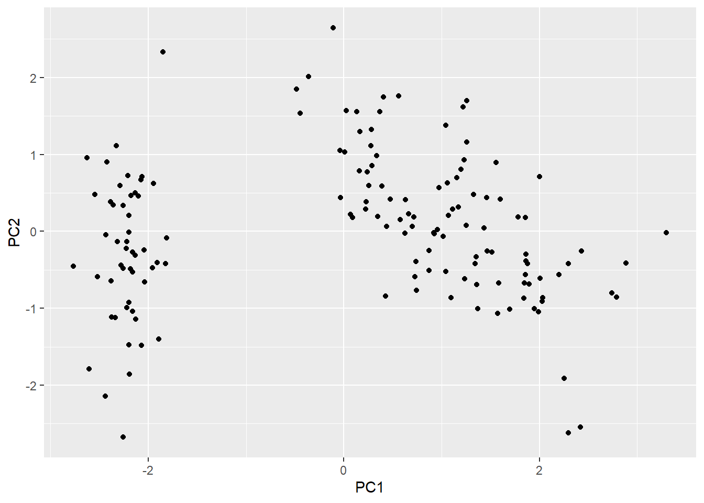
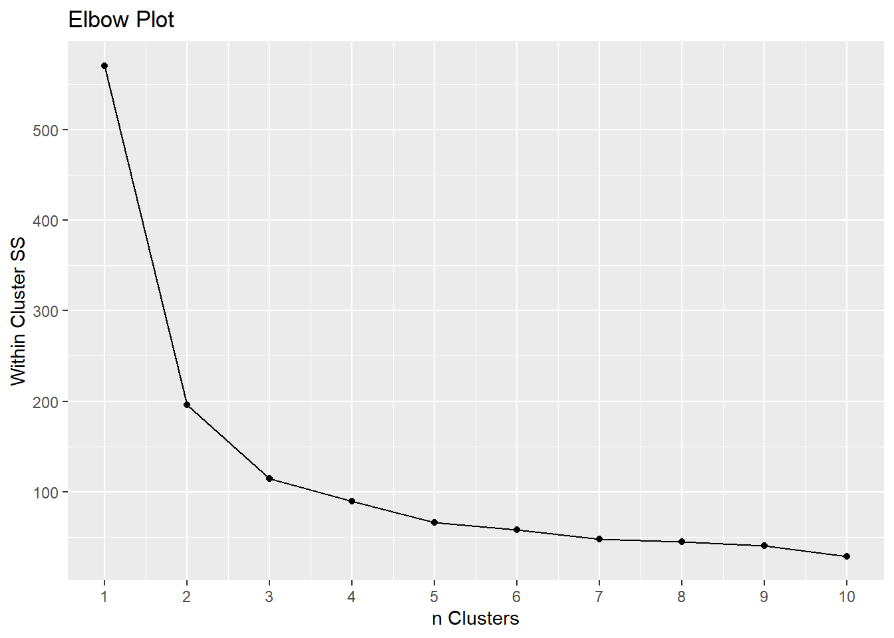
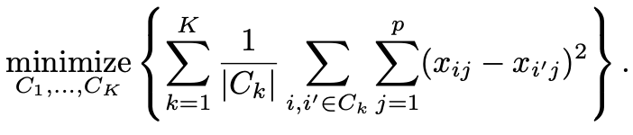
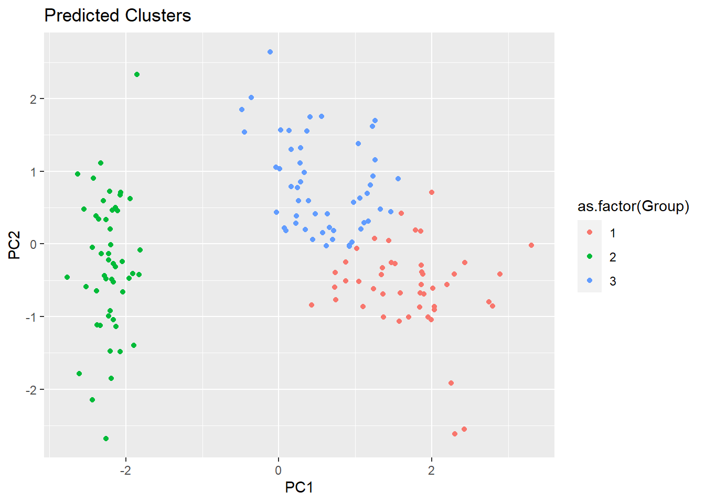
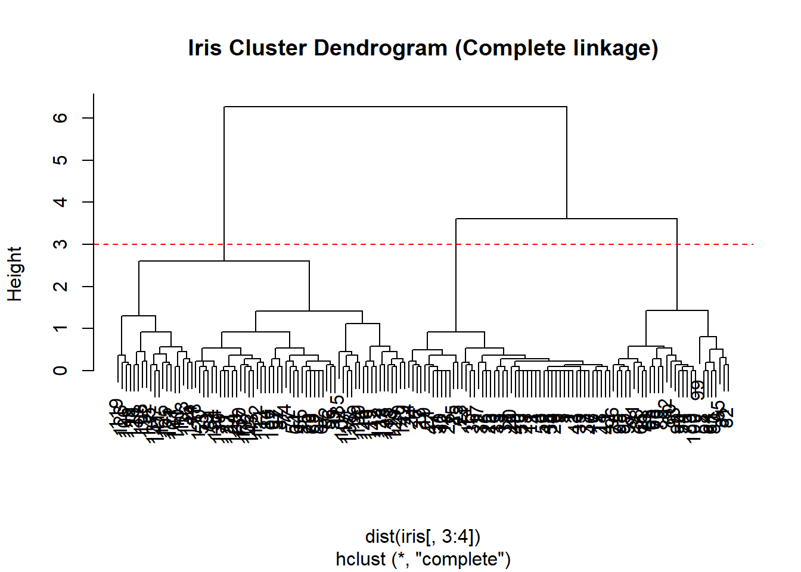
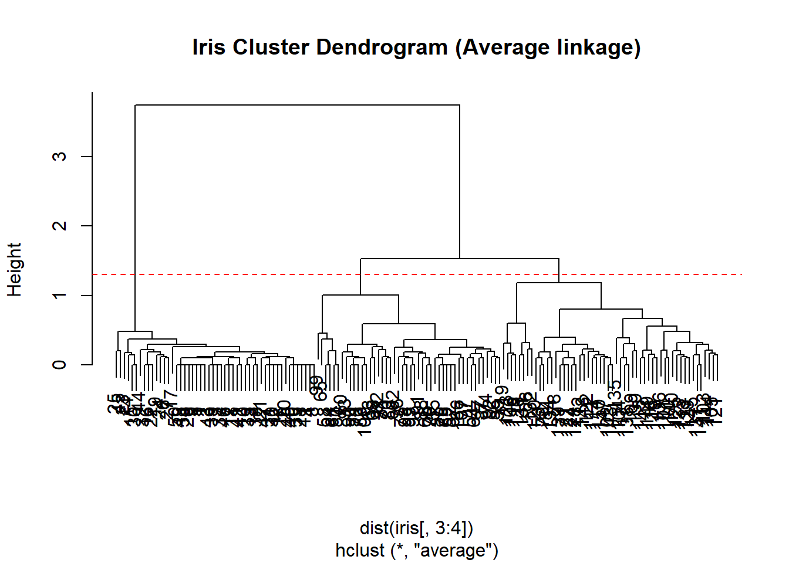
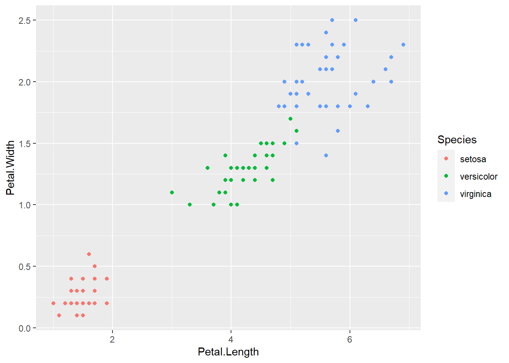
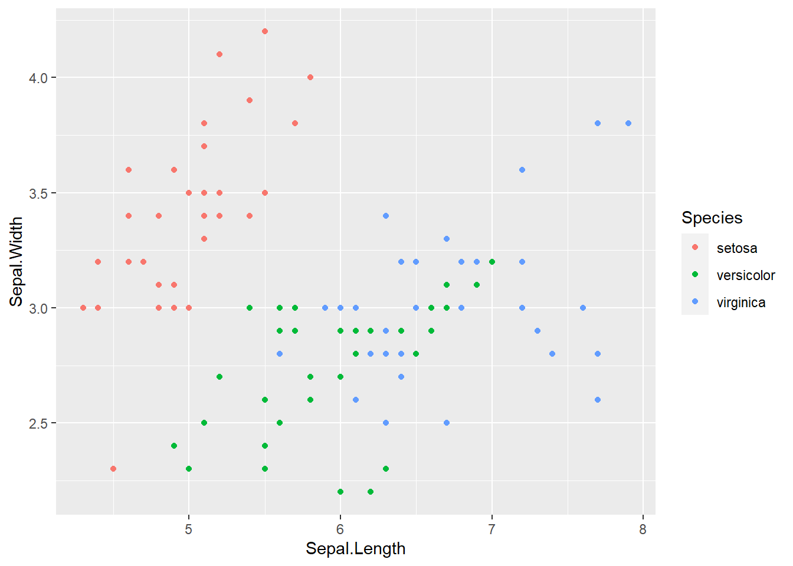
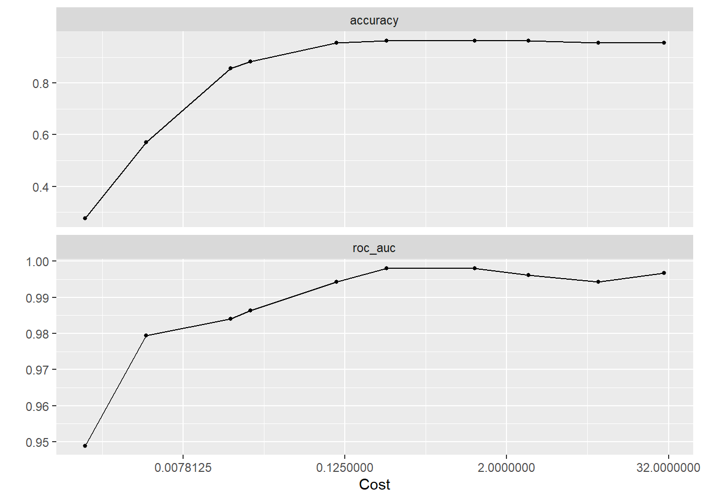

In this vignette, we will take a deep dive into clustering and explain the methodology and processes in order to give you the tools to perform clustering for machine learning applications. We will delve into K-means and hierarchical clustering, and we will talk about the reasons to use or not to use hierarchical clustering.
Objectives: Learn clustering methods, when and why to use them. Introduce hierarchical clustering and compare the benefits and downsides. Learn visualization methods such as dendrograms.
Setup
For this activity we will be using the iris dataset. This dataset consists of measurements taken from three different species of iris flowers: Versicolor, Setosa, and Virginica.
# packages:library(tidyverse)
Warning: package 'tidyverse' was built under R version 4.2.3
Warning: package 'ggplot2' was built under R version 4.2.3
Warning: package 'tibble' was built under R version 4.2.3
Warning: package 'readr' was built under R version 4.2.3
Warning: package 'purrr' was built under R version 4.2.3
Warning: package 'dplyr' was built under R version 4.2.3
Warning: package 'forcats' was built under R version 4.2.3
Warning: package 'lubridate' was built under R version 4.2.3
── Attaching core tidyverse packages ──────────────────────── tidyverse 2.0.0 ──
✔ dplyr 1.1.3 ✔ readr 2.1.4
✔ forcats 1.0.0 ✔ stringr 1.5.0
✔ ggplot2 3.4.4 ✔ tibble 3.2.1
✔ lubridate 1.9.3 ✔ tidyr 1.3.0
✔ purrr 1.0.2
── Conflicts ────────────────────────────────────────── tidyverse_conflicts() ──
✖ dplyr::filter() masks stats::filter()
✖ dplyr::lag() masks stats::lag()
ℹ Use the conflicted package (<http://conflicted.r-lib.org/>) to force all conflicts to become errors
The iris set is made up of 5 variables and 150 observations, with each observation being an iris flower. 4 of the variables give measurements of sepal length, sepal width, petal length, petal width. The last variable is Species, which we will not be using as it would have been the response variable for supervised methods. The other 4 variables will be used as predictors.
Action
Your job is to sort the data into clusters using k-means and hierarchical clustering.
K-means Clustering
Step 1: PCA
Since we have more than 2 predictors, our first step will be to perform Principal Component Analysis to reduce the dimensionality of the data down to 2 axes. Clustering is a unsupervised method, so to make our data compatible with this process we will extract the outcome variable to yield feasible results.
# Calculate the principal components using prcomp() functionpca <-prcomp(iris[, -5], scale =TRUE)# Extract the scores for the first two principal componentspc1 <- pca$x[, 1]pc2 <- pca$x[, 2]#get a summary of the componentssummary(pca)
Importance of components:
PC1 PC2 PC3 PC4
Standard deviation 1.7084 0.9560 0.38309 0.14393
Proportion of Variance 0.7296 0.2285 0.03669 0.00518
Cumulative Proportion 0.7296 0.9581 0.99482 1.00000
We will be creating clusters using these components.
Before that, lets take a look at our data when plotted on the axes given by the components:
iris_pca <-data.frame(cbind(pc1, pc2))colnames(iris_pca)[1:2] <-c("PC1", "PC2")# Create a scatter plot of the first two principal componentsggplot(iris_pca, aes(x = PC1, y = PC2)) +geom_point()

Visual observation is one way of choosing the number of clusters to use in k-means clustering. Based on this plot, we would likely choose 2 as our number of clusters. However, lets try a more rigorous method before making any decisions.
Step 2: Elbow Method
K-means clustering requires us to pre-select the number of clusters we will be grouping our data into. This is done using the elbow method, in which we first vary the number of clusters and calculate the within-cluster sum of squares. Then, we plot the sum of squares and # of clusters visually and find where the change in SS starts to level off, selecting that point as our chosen number of clusters.
#calculate ss for each # of clusters inertia<-c()for (i in1:10){ m<-kmeans(iris_pca, centers = i) # perform clustering inertia<-c(inertia,m$tot.withinss)# get within cluster SS for that k }#plot dataggplot(data =NULL, aes(x =1:10, y = inertia))+geom_line()+geom_point()+labs(title ="Elbow Plot", x ="n Clusters", y ="Within Cluster SS")+scale_x_continuous(breaks =pretty(1:10, n =10))

As we can see, the change in SS seems to level off after 3. Therefore we will set our number of clusters for k-means as 3.
Step 3: Clustering
We will now be performing k-means clustering, which is a simple and efficient approach for breaking a dataset into distinct groups. The algorithm involves randomly assigning each observation to an initial cluster, then begins an iterative process of computing the centroid of each cluster and assigning each observation to the cluster with the closest centroid. The goal is to minimize the Euclidean distance, that is:

where each \(C_k\) is a cluster.
The algorithm continues to iterate until the clusters no longer change, or until the maximum iterations are reached.
We will now apply this k-means clustering method to our own dataset in order to group each flower into one of the three species.
#clustermodel<-kmeans(iris_pca, centers =3)#create dataframepreds<-cbind(iris_pca, model$cluster)colnames(preds)[3]<-"Group"#plot clustersggplot(preds, aes(x = PC1, y = PC2, color =as.factor(Group))) +geom_point()+labs(title="Predicted Clusters")

We have successfully clustered our data using k-means clustering.
Hierarchical Clustering
Unlike k-means clustering there is no pre-specified number of clusters to work with. There are two different ways to go about hierarchical clustering: agglomerative and divisive. Agglomerative hierarchical clustering where we follow more of a bottom up method. Each observation will be its own cluster all the way down until all the clusters are merged into one at the end. For divisive clustering it is the opposite fashion where there all the data is in one cluster at the top and it splits down into clusters that contain variables similar to eachother but different than the other clusters created around it(top-down). Another benefit to using hierarchical clustering is that you can choose where to cut off the clusters.
Algorithm/ theory: We first want to create a distance matrix with the euclidean distance function. In finding similarities in clustering the question is always how much space between points is a good threshold, this will usually be determined by the shape of the cluster. Some methods for getting the threshold are: single linkage, complete linkage,centroid linkage,average linkage, ward linkage.
Dendrograms:
We will perform hierarchical clustering with the default linkage method, which is complete.
# hierarchical clustering using default method:clusters_complete <-hclust(dist(iris[, 3:4]), method ='complete')# plot the dendrogram:plot(clusters_complete, main ='Iris Cluster Dendrogram (Complete linkage)')abline(h =3, col ='red', lty ='dashed')

Agglomerative hierarchical clustering works from the bottom up, with each leaf at the bottom of the dendrogram representing an observation. Working up the tree, leaves that are similar to one another begin to fuse together to create branches. These branches fuse with similar branches, and this keeps continuing up the tree until all observations/branches are fused. Therefore, when we look at the dendrogram, we can tell how similar or different two observations are based off the height at which they fused together — fusing at the bottom of the tree indicates similarity, while fusing higher up shows more dissimilarity.
Recall that hierarchical clustering enables us to work with any number of clusters based off of a single dendrogram. In order to identify clusters, we can draw horizontal lines across the plot and observe the distinct branches that are made. This height controls the number of clusters we work with, which makes it similar to the value of K in k-means clustering. For example, in the figure above, we added a line at height = 3, which created 3 different clusters. However, if we were to cut at height = 2, we would end up with 4 groups.
Tree cutting:
For our specific problem, a good choice would be to cut the tree in order to make 3 clusters, as indicated by our dendrogram as well as our prior knowledge of the number of iris species. We will now move forward with cutting the tree and assessing the clusters that result.
# cut the tree at the desired number of clusters (3):cut_complete <-cutree(clusters_complete, 3)# observe results in table form:table(cut_complete, iris$Species)
The above table shows that all 50 Setosa flowers were classified by cluster 1 and all 50 Virginica flowers were classified by cluster 2, but the algorithm struggled with Versicolor.
For the sake of exploration, we can also see what would have happened if we decided to cut the tree to make 4 clusters:
# cut tree for 4 clusters:cut_2 <-cutree(clusters_complete, 4)table(cut_2, iris$Species)
Before we try to improve the results of our classification, let us first dive into the workings behind the algorithm to see what is happening behind the scenes. The hierarchical clustering algorithm is an iterative process that starts at the bottom of the dendogram, with each of the n observation being its own cluster. The algorithm then merges the two most similar clusters, reducing the total count to n - 1 clusters. This process continues over and over, fusing the two clusters most similar to each other, until all observations are in a single cluster, which is seen in the top of the dendogram.
The concept of linkage, as mentioned before, comes in to play to define the dissimilarity between two groups of observations. In our computations above, we were using the default complete method, which utilizes the maximal intercluster dissimilarity. Other common linkage methods are single, average, and centroid, which are described in the table below.
Now that we have discussed the different linkage methods, let us try to improve our results by using a different method.
Complete
The distance between two clusters is the maximal distance between the farthest points in cluster 1 and 2.
\(d_{12} = max(i,j) d(X_i, Y_j)\)
Single
The distance between two clusters is the minimal distance between the closets points in cluster 1 and 2.
\(d_{12} = min(i,j) d(X_i, Y_j)\)
Average
The distance between two clusters is the average of the distances between all pairs of points in cluster 1 and 2.
The distance between two clusters is distance between the two mean vectors of clusters 1 and 2.
\(d_{12} = d(\bar{x}, \bar{y})\)
Final clustering:
# hierarchical clustering using average method:clusters_average <-hclust(dist(iris[, 3:4]), method ='average')# plot the dendrogram:plot(clusters_average, main ='Iris Cluster Dendrogram (Average linkage)')abline(h =1.3, col ='red', lty ='dashed')

# cut the tree at the desired number of clusters (3):cut_average <-cutree(clusters_average, 3)# observe results in table form:table(cut_average, iris$Species)
As seen in the table, utilizing the average linkage method was much more successful in classifying the flowers. We can also visualize these results in the form of a plot:
We have now discussed and gone in detail about two types of clustering: K-means and hierarchical. Note the differences in their respective processes and consider the benefits of using one over the other. K-means requires a specified number of clusters, but is more computationally efficient. Hierarchical is customizable and reproducible, allowing for flexibility.
Additional Exploration: SVM
In this section we will look into support vector machines(SVM). SVMs are handy for all classification problems and have been modified to work in clustering. We will look at how this method performs using both the linear and radial kernel methods. Throughout the code walk through we will focus on why some things will be more of less efficient compared to k-means clustering done in the other clustering example.
Objectives: Run support vector machines using both linear and radial kernels and running metrics on them.
Setup
Just like before we will take some time to look into our data in order to understand the variables. Please open the necessary packages shown below.
library(tidymodels)
Warning: package 'tidymodels' was built under R version 4.2.3
Warning: package 'broom' was built under R version 4.2.3
Warning: package 'dials' was built under R version 4.2.3
Warning: package 'modeldata' was built under R version 4.2.3
Warning: package 'parsnip' was built under R version 4.2.3
Warning: package 'recipes' was built under R version 4.2.3
Warning: package 'rsample' was built under R version 4.2.3
Warning: package 'tune' was built under R version 4.2.3
Warning: package 'workflows' was built under R version 4.2.3
Warning: package 'workflowsets' was built under R version 4.2.3
Warning: package 'yardstick' was built under R version 4.2.3
── Conflicts ───────────────────────────────────────── tidymodels_conflicts() ──
✖ scales::discard() masks purrr::discard()
✖ dplyr::filter() masks stats::filter()
✖ recipes::fixed() masks stringr::fixed()
✖ dplyr::lag() masks stats::lag()
✖ yardstick::spec() masks readr::spec()
✖ recipes::step() masks stats::step()
• Dig deeper into tidy modeling with R at https://www.tmwr.org
library(ISLR)library(ISLR2)
Attaching package: 'ISLR2'
The following objects are masked from 'package:ISLR':
Auto, Credit
library(tidyverse)library(glmnet)
Warning: package 'glmnet' was built under R version 4.2.3
Loading required package: Matrix
Warning: package 'Matrix' was built under R version 4.2.3
Attaching package: 'Matrix'
The following objects are masked from 'package:tidyr':
expand, pack, unpack
Loaded glmnet 4.1-8
library(modeldata)library(kernlab)
Attaching package: 'kernlab'
The following object is masked from 'package:scales':
alpha
The following object is masked from 'package:purrr':
cross
The following object is masked from 'package:ggplot2':
alpha
library(tidyclust)library(corrplot)
corrplot 0.92 loaded
tidymodels_prefer()
As you can see below our data contains 4 variables Sepal.Length, Sepal.Width, Petal.Length,Petal.Width, that describe the iris species. We also have the outcome variable which is the species of flower. Our data will include the outcome for this series of coding because SVMs use the outcome on the training data to to decide the threshold of when and where to separate clusters. This logic stands with kernel methods however it is used in higher dimensional space with more complex decision boundaries.
We will split the data for SVM predicting. We avoided stratifying there is no unbalanced proportioning within groups and then we cross validated with 5 folds because that is a common and appropriate value.
Before we get into any kernels we will first make plots to visualize possible clusters. For an easy read we made two graphs one which has the correlation between only petal length and width on the species outcome. After this will will repeat this process with the sepal width and length to make further observations,
ggplot(iris_train, aes(Petal.Length, Petal.Width, color = Species)) +geom_point()

ggplot(iris_train, aes(Sepal.Length,Sepal.Width, color = Species)) +geom_point()

We will first start with a linear kernel however let’s first talk about why this might not work out. Looking at the plot comparing the sepal length and width on the outcome on species we can visually see there is no linear way to separate these clusters. In theory we need something with a higher dimensionality because we have a multivariate model. It is also good to note that in the context of the iris data set we were told that setosa is linearly separable from versicolor and virginica but versicolor and virginica are not linearly separable from each other. It is always good to be comfortable with your data so that you do not take extra steps. (below is the mathematical equation for a linear as well as a polynomial kernel)
Gaussian or radial basis: \(k(x_1,x_2) = exp(-\gamma \|x_1-x_2\|^2)\)
For a simpler classification data set this will work out in your favor, for today we will just run it to show it will not be in our favor. In the recipe we will standardize all the variables and then use default values when tuning each of the 5 levels we have.
Warning: The `...` are not used in this function but one or more objects were
passed: ''
svm_linear_res %>%autoplot()

Contrary to former assumptions the roc-auc had its highest value at almost 1.0 which means it performed ideally. However, this perfect roc_auc and almost perfect accuracy could be attributed to over-fitting if it is miscalculated.
Below we fit the linear kernel to the best metrics in case we want to show visualizations on it.
svm_best_linear <-select_best(svm_linear_res)
Warning: No value of `metric` was given; metric 'roc_auc' will be used.
Doing the same method however now using a radial kernel we actually get lower results for ROC_AUC and accuracy which is odd for a couple reasons. Radial kernels are for higher dimensional data which is what we have because we have a multi-class data set. On top of this our outcome classes are not all linearly separable and radial kernels can also deal with this.
In both kernels we extracted the best values and fitted them so we could get a final visual of the one that performed better. In the end I will make the educated choice of creating a confusion matrix based on the radial kernel to see the results of our predictions based on the test data. This is because a radial kernel in theory is much more suited for our data. Lastly it is good to note that we choose to use a confusion matrix because it makes the most sense for interpretability with a multiclass model.
As we expected the confusion matrix shoes errors distinguishing virginica and versicolor the two species that were not said to be linearly separated from the setosa species.
Takeaway
In conclusion this section of the lab shows that support vector machines are versatile but have a lot things to look out for when clustering compared to k-means. You have to be aware of your data and its context. You must take different steps for multi-class models for example how to visualize their results.